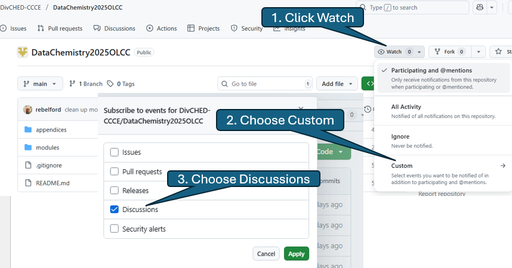
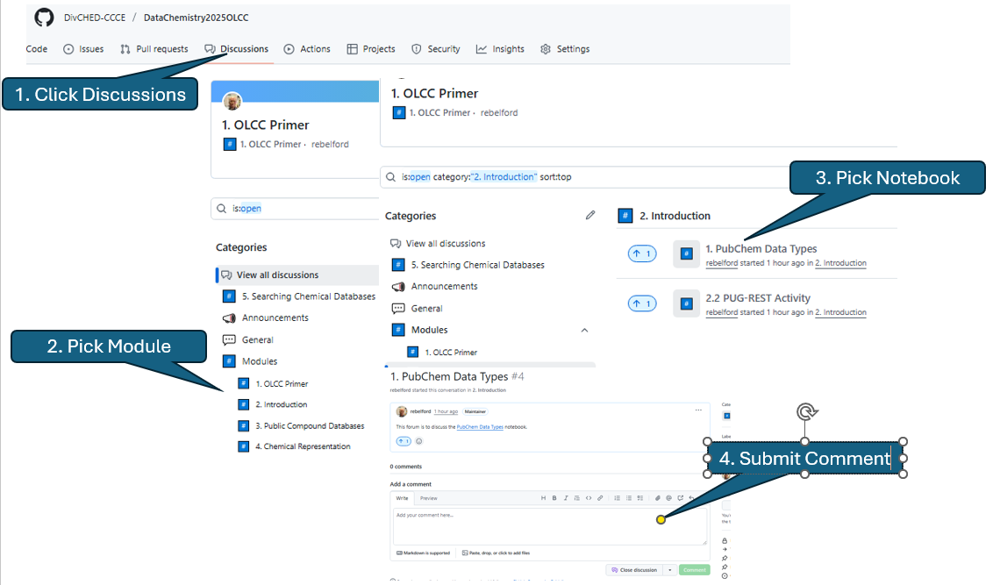

1.1 OLCC Primer#
Welcome to the DataChemistry OLCC (OnLine Chemistry Course).
This notebook is under development
OLCC History#
OLCC’s (OnLine Chemistry Courses) are organized by the ACS (American Chemical Society) Division of Chemical Education’s Committee on Computers in Chemical Education (CCCE) with the first OLCC being offered in the Spring of 1996. This makes them one of the oldest Online Courses and the first one is available through the Internet Archive’s WayBack Machine.
The acronym OLCC is actually misnomer dating from the dawn of the internet and today we would call them intercollegiate collaboratively taught hybrid courses, where students of multiple classes meet with a resident faculty member while also communicating online with experts from both academic and nonacademic institutions. Further information on OLCCs can be found in this 2020 Journal of Chemical Education Article.
This data chemistry OLCC will involve multi-campus discussions on the CCCE DataChemistry2025OLCC GitHub repository where you can also download the Python based Jupyter notebooks. You will be provided resources on how to run the notebooks on your own computer or access an online Jupyter Lab through the nanoHub.
The purpose of this notebook is to provide you with instructions on how to use the tools and technologies we will use in this course.
1. GitHub#
This course is using a series of Jupyter Notebooks posted in the Course GitHub DivCHED-CCCE/DataChemistry2025OLCC. You can download these notebooks to your own computer and run them locally, or access them through the course nanoHub tool. If you do not have an account at github.com, please make one now.
1. Create an Account on GitHub#
If you do not have an account at github.com, please make one now. Although you can use your university email, it may be prudent to use a different email address so that you have access to it after you graduate. This will allow you to generate your own repository and access other people’s repositories even after you graduate.
2. Watch Class Discussions#
Once you have created an account navigate to the course GitHub DivCHED-CCCE/DataChemistry2025OLCC. You now want to watch the discussions, which will allow you to participate in discussions with faculty and students from multiple campuses. This is a three step process as outline in the following image

Once you are watching discussions you will get an email when someone makes a comment, and a reply to your email will result in a comment to the discussion forum.
3. Participate in Discussions#
The discussion forum of the course GitHub has the same Directory structure as the repository and to discuss a notebook you navigate through the Discussion Topics to the desired notebook discussion. You first click Discussions on the top toolbar and then choose the forum topic the notebook you wish to discuss is in. 
where we will post course content and discuss the modules. will use GitHub to provide a repository for our code and to discuss the modules across labs
2. nanoHUB#
There are essentially two ways you can run the code on your computer, install software on your computer and download the code, or use a cloud service. When you install software on your computer you have direct control over the Python packages your environment uses and you are most welcome to download the code from the gitHub onto your computer and run the assignments on your local host. The nanoHUB is a cloud service that runs a Jupyter Hub where we have not only uploaded all the notebooks you will use in the class, but have also installed all the packages you need to run the notebooks.
2.1 Create account at nanoHUB#
Go to https://nanohub.org/ and sign up if you do not already have an account. If you have a Google account I suggest you use the Sign in with Google option, or you can create an account from scratch. There is no problem using you school email, as unlike GitHub, nanoHUB is not a place for students to upload and share code, but a place to run the code. There are only three fields that you are required to fill out and this is a free service being provided through the nanoHUB project that is run out of Purdue University.
3. Python Code#
Python code can live in different file types depending on the purpose of the code and we will be using two different file types, python files (*.py) and interactive Python notebook files (*.ipynb).
.pyfilesPlain text files that store Python code.
Best for scripts, packages, and projects meant to be reused or run outside of Jupyter.
Executed linearly from top to bottom.
.ipynbfiles (Jupyter Notebooks)JSON documents that mix code cells and Markdown cells.
Excellent for exploration, teaching, data analysis, and reproducible science.
Store outputs (plots, tables, text) alongside the code.
To execute the code you need to have python installed on a computer and you sort of have two choices. 1. Run your code in a cloud service 2. Install the software on your own computer.
When you install the software on your own computer you will need to control the environment it is in and provide access to the necessary packages. You also have two choices for running the code, in a full fledged IDE (Interactive Development Environment) or within a Jupyter Notebook or Lab, which many scientists treat as an IDE.
4. Jupyter Platform#
4.1 Jupyter Hub#
The nanoHUB is providing a Jupyter Hub that has all the packages preinstalled to run the code. When you launch your class tool or open it in the “My Sessions” you are opening a Jupyter Lab within that directory of your nanoHUB user space. This is the simplest and easiest way to run the course assignments.
4.2 Jupyter Lab#
A Jupyter Lab is an interface that allows you to concurrently run different notebooks, and those notebooks can actually be in different environments with different packages. If you are running your notebooks on your computer you need to start the lab in the Linux terminal with the following command. Note in this class we are using conda to manage the environments, and you need to activate an environment containing the jupyter lab package, which we will call “jpenv”. If you are using the nanoHUB this is preloaded when you start the tool.
conda activate jpenv
jupyter lab
4.3 Jupyter Notebook#
The Jupyter notebook has code and Markdown cells, and the code cells allow you to execute the script within the code cell. There are empty square brackets ([ ])to the left of each code cell and if they have a star it means the cell is executing and if they have a number it tells you the order the cell was executed in. So you can run different code cells in any sequence you want. Please reference this Jupyter Book Chapter on “Running and Creating Jupyter Notebooks”
4.4 Jupyter Book#
A jupyter book is compiled by combining multiple notebooks into a html based webpage. This Jupyter Book and you